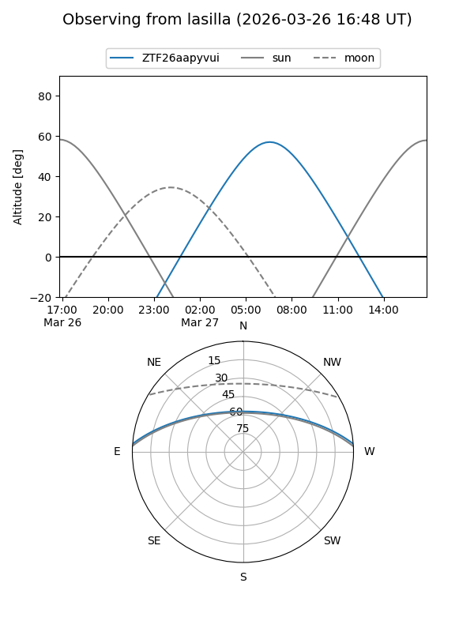
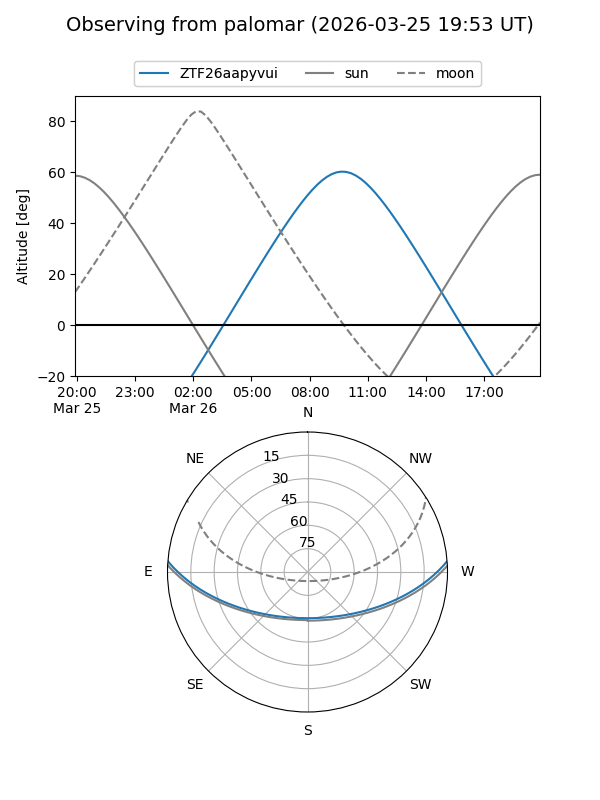

ZTF26aapyvui
Target ZTF26aapyvui at 2026-03-26 09:49
Aliases and brokers:
FINK: link
Lasair: link
ALeRCE: link
alt names
ZTF26aapyvui (ztf,fink_ztf)
Coordinates:
equatorial (ra, dec) = 212.0663,+3.78667
equatorial (HMS+DMS) = 14:08:15.92,+03:47:12.01
galactic (l, b) = (344.4431,+60.31113)
Flags:
Photometry:
last ztfg=19.75
1 ztfg detections
Lightcurve
Visibility


Additional plots